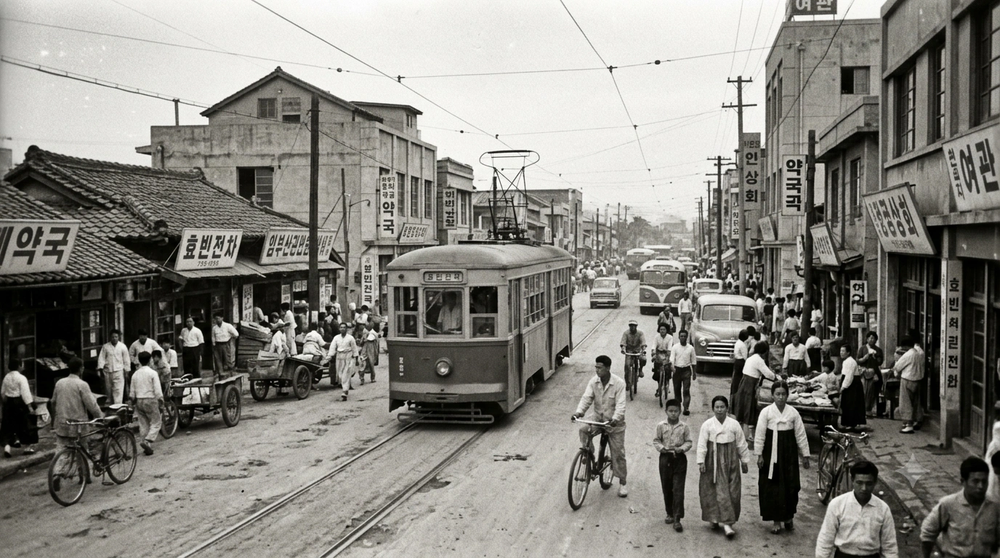
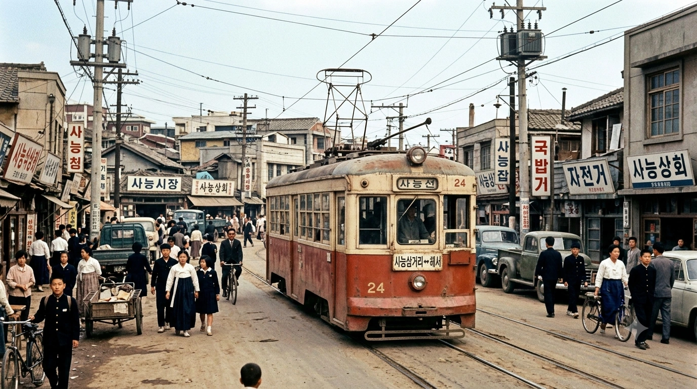
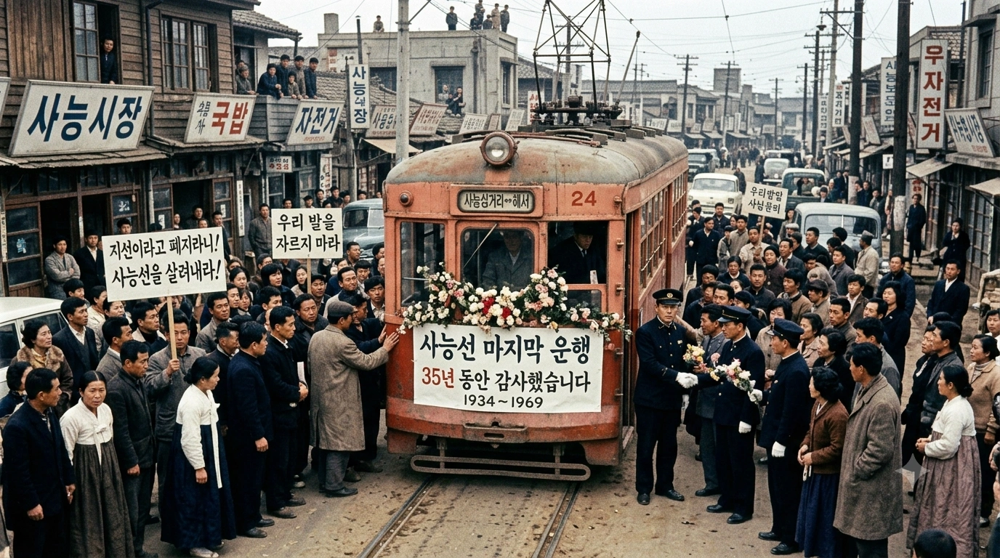
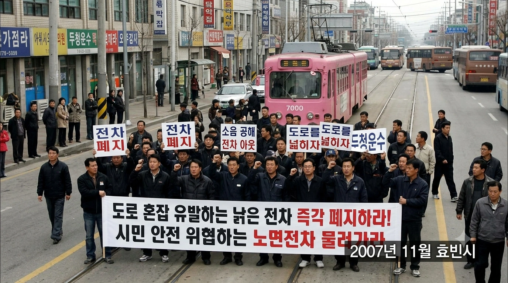
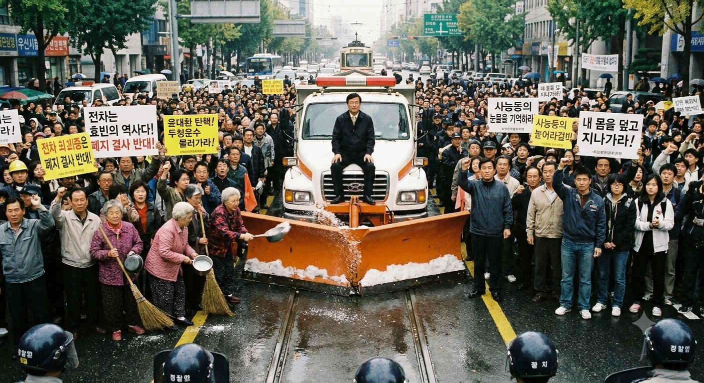
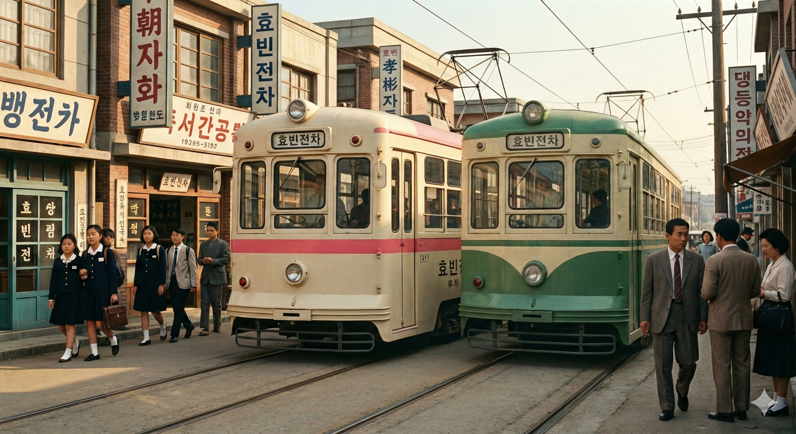
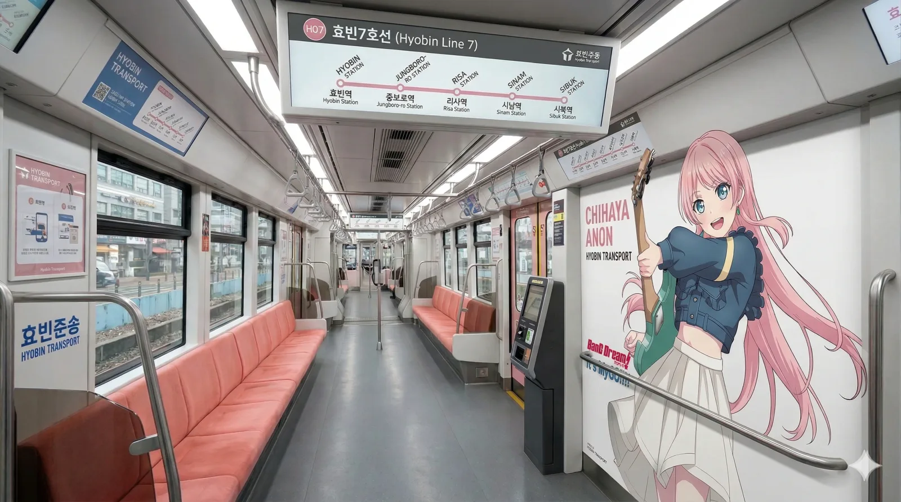
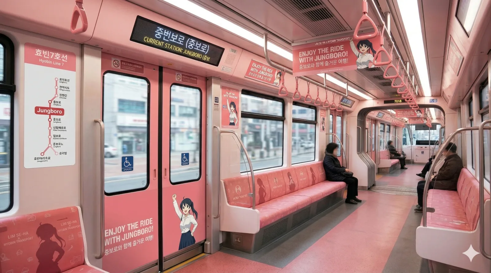
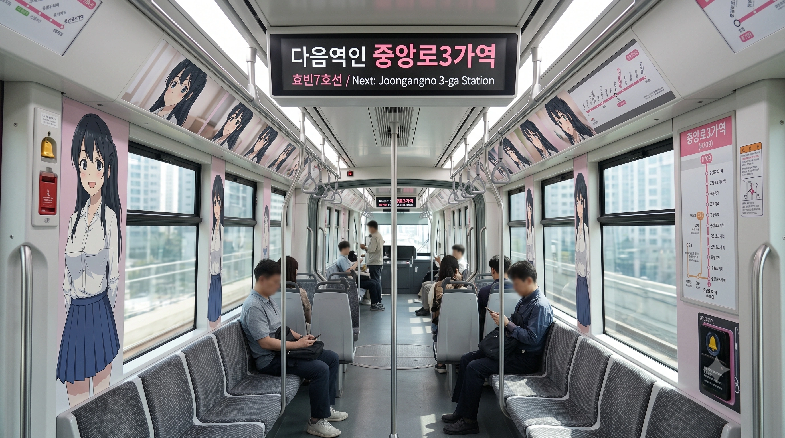
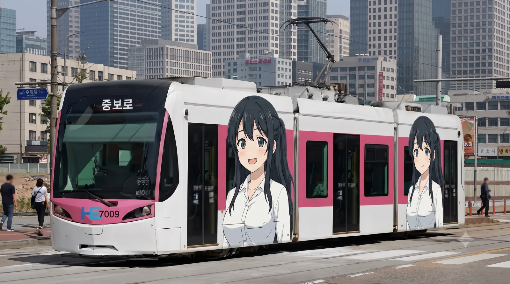

효빈교통공사 7000호대 전동차
1. 개요
"100년을 달린 효빈의 낭만, 노면전차의 부활"
효빈시의 도로 위를 합법적으로 쏘다니는 분홍색 길막러(?)
효빈교통공사가 효빈 도시철도 7호선에서 운용 중인 노면전차(트램) 차량이다.
7호선의 뿌리는 무려 1931년 4월 5일 개업한 사철 '효빈전차'까지 거슬러 올라가는, 효빈시 역사 그 자체인 살아있는 전설의 노선이다. 과거 회주공업 효빈전차운영본부가 자사 통근 및 구도심 교통을 위해 운영하던 시절을 거쳐, 효빈광역시로 이관된 후 대대적인 현대화 사업을 통해 지금의 최첨단 저상 트램으로 재탄생했다.
노선 색상은 벚꽃과 항구의 일몰을 상징하는 분홍색(#FF8899)으로, 구도심의 레트로한 감성과 현대적인 트램의 세련됨을 절묘하게 섞어놓았다. 2009년 도시철도 정식 편입과 함께 1세대 트램이 굴러가기 시작했으며, 폭발적인 관광 및 통근 수요를 감당하기 위해 현재 4세대까지 순차적으로 덩치를 키우며 진화 중이다.
특히 현재 대한민국에 유일하게 명맥이 끊기지 않고 남은 전통 노면전차(트램)라는 엄청난 상징성을 쥐고 있다. 이 압도적인 희소성 덕분에 효빈 시민들의 발 역할은 물론, 트램을 타보고 사진을 남기기 위해 전국 각지, 나아가 해외에서까지 몰려드는 관광객들로 사시사철 문전성시를 이룬다.
2. 눈물과 투쟁의 역사 (과거 효빈전차 시절)
현재의 화려한 7000호대 핑크빛 트램이 탄생하기 전, 효빈전차는 철거의 위협 속에서 피눈물을 흘리며 버텨낸 처절한 역사를 가지고 있다.

▲ 1960년대 중구 도심 한복판을 가로지르는 효빈전차의 낭만적인 모습. 이 시절의 구형 전차들은 아직도 시민들의 향수로 남아있다.
- 태동과 전성기 (1931~1960s): 1931년 개통하여 효빈시의 심장부를 관통하는 혈관 역할을 했다. 한국전쟁으로 시설의 80%가 파괴되었으나, 회주공업 창업주 박신유 회장이 사재를 털어 복구해내며 전성기를 맞았다.
- 1969년 사능선의 비극: 군사정권의 무자비한 전차 폐지 압박 속에서 박신유 회장의 결단으로 중구 본선은 지켜냈으나, 인구 5만이 넘게 살던 사능동 중심부 노선(사능선)이 강제 폐지당하며 교통 생지옥이 열리는 뼈아픈 역사를 남겼다.


2.1. 철도 파괴자 윤대환과 2007년의 빗자루 항쟁
2006년 단 3표 차이로 당선된 악명 높은 시장 윤대환은 자신의 일가 기업인 '두청운수'의 이익을 극대화하기 위해 멀쩡히 굴러가던 효빈전차를 구시대의 흉물로 매도하며 전면 폐지를 시도했다. 그는 전차 때문에 교통체증이 일어난다는 억지 프레임을 씌우기 위해, 심지어 두청운수 직원들을 동원하여 가짜 시위대(일명 프락치)를 조직하고 조작된 여론을 퍼뜨리는 악랄한 공작까지 서슴지 않았다.


하지만 시민들은 바보가 아니었다. 전차가 사라지면 6,300원짜리 바가지 요금의 두청운수 똥색 버스를 타야 한다는 것을 직감한 중구 주민들은, 새벽 1시에 잠옷 바람으로 빗자루와 냄비를 들고 뛰쳐나와 선로를 가로막고 윤대환의 철거 용역들과 맞서 싸웠다. 이 처절한 '빗자루 항쟁' 끝에 윤대환은 선거법 위반으로 축출당했고, 효빈전차는 극적으로 살아남아 지금의 7호선으로 화려하게 부활하게 된 것이다. 7000호대의 분홍색은 윤대환의 더러운 음모를 이겨낸 시민들의 위대한 승리의 징표이기도 하다.
3. 분류 (세대별)
현대화 사업 이후 도입 시기에 따라 1~4세대로 구분한다.

현재 운행 중인 최신형 저상 트램 이전, 효빈시의 낭만을 상징하며 구도심을 누비던 전설적인 차량들이다.
■ 목조전차 (1~30호)
1931년 효빈전차 개통과 함께 도입된 최초의 차량이다. 바닥부터 천장, 좌석까지 모두 나무로 제작되어 특유의 삐걱거리는 소리와 짙은 나무 향기가 났다. 일제강점기 시절부터 한국전쟁의 끔찍한 참화를 거치며 효빈 시민들의 애환을 싣고 달렸던 진정한 산증인이다. 승차감은 현재의 7000호대와 비교하면 마차 수준으로 덜컹거렸고 단열도 엉망이었지만, 당시로서는 가장 빠르고 쾌적한 최첨단 대중교통이었다. 특히 운전사가 직접 발로 밟아 울리는 "땡땡땡!" 하는 아날로그 종소리는 효빈 구도심을 상징하는 ASMR이나 다름없었다. 안타깝게도 노후화와 화재 위험성 문제로 1968년에 전량 퇴역 및 해체되어 현재는 흑백 사진으로만 그 낭만적인 모습을 확인할 수 있다.
■ 구형전차 (101~130호)
1965년부터 순차적으로 도입되어 2009년 대대적인 현대화 사업 직전까지 무려 반세기 가까이 효빈시를 지켜낸 전설적인 철제 전동차다. 목조전차의 화재 취약성과 덜컹거리는 단점을 보완하기 위해 튼튼한 강철 차체를 적용했으며, 투박하지만 우직한 내구성으로 회주공업 노동자들의 고단한 출퇴근을 책임졌다. 1969년 사능선 강제 폐지의 비극과 2007년 독재자 윤대환의 전차 말살 공작 등 숱한 철거 위기 속에서도 시민들의 보호 아래 꿋꿋하게 선로를 버텨낸 '생존의 아이콘'이기도 하다. 에어컨이 없어 한여름에는 창문을 모두 열고 천장에 달린 구형 선풍기에 의존해야 했고, 비 오는 날에는 틈새로 빗물이 새기도 했지만 시민들은 이 낡은 주황색 전차를 가족처럼 아꼈다. 현재는 대부분 폐차되었으나, 상태가 가장 좋은 몇몇 차량은 내항차량기지 인근 철도 박물관에 영구 보존되어 그 시절의 추억을 전하고 있다.
3.1. 1세대 (2009년)
.webp)
- 차량번호: 7001~7011 (총 11편성, 2량)
- 특징: 효빈전차가 도시철도로 정식 편입되며 낡은 구형 전차를 교체하기 위해 들여온 최초의 현대식 저상 트램. 당시 유행하던 유럽형의 다소 투박하고 각진 박스형 디자인을 채택했다.
3.2. 2세대 (2015년)
- 차량번호: 7012~7022 (총 11편성, 3량)
- 특징: 효빈항 일대 관광객 증가로 기존 2량 편성의 수송력이 박살나자 부랴부랴 들여온 증강분. 1세대 디자인을 베이스로 중간 객차 모듈을 하나 더 붙여 수송량을 대폭 늘린 것이 특징이다.
3.3. 3세대 (2020년)
.webp)
- 차량번호: 7023~7044 (총 22편성, 2량)
- 제작: 회주공업
- 특징: 노후화가 극심했던 일부 잔존 구형 전차를 완전히 밀어내기 위해 도입. 효빈의 향토기업인 회주공업이 자체 기술력으로 직접 제작했으며, 공기역학적 유선형 디자인과 시인성 좋은 대형 풀컬러 LED 행선판을 장착했다.
3.4. 4세대 (2024년)
- 차량번호: 7045~7066 (총 22편성, 3량)
- 제작: 회주공업
- 특징: 배터리 하이브리드 시스템 탑재로 도심 미관을 해치는 전선 없이 무가선 주행이 완벽히 가능하다. 3세대와 패밀리룩을 이루지만 3량 편성이라 훨씬 길쭉하고 육중한 맛이 있다.
- 전차선의 미스터리: 4세대 트램은 완벽한 무가선 배터리 주행이 가능함에도 불구하고, 7호선 본선 구간의 공중에는 여전히 거미줄 같은 전차선(가선)이 상당 부분 철거되지 않고 남아있다. 이는 구형 효빈전차 시절의 클래식한 분위기와 도시의 낭만을 보존하기 위한 '역사적 경관 재현용' 장식이다. 물론 1, 2세대 등 배터리 용량이 작은 구형 트램들의 비상 충전을 위한 예비 전력선 역할도 겸하고 있어 완전 철거를 미루고 있는 실정이다.
4. 배속 및 운용
7호선의 모든 차량은 효빈항 인근의 내항차량사업소에서 일괄 관리한다.
내항차량사업소 (Naehang Depot)
"트램들의 안식처이자 '만마루'의 성지"
7호선 만마루역에서 기지로 이어지는 인입선로가 분기된다. 기지로 들어가는 길목이 좁은 골목과 시장통을 관통하기 때문에, 사람과 상인들 사이로 거대한 트램이 아슬아슬하게 지나가는 이국적인 풍경을 볼 수 있다.
성지순례: 역명과 지명이 하필 '만마루(Manmaru)'라서, 애니메이션 BanG Dream!(마루야마 아야의 캐치프레이즈) 팬들과 러브 라이브! 슈퍼스타!!(시부야 카논의 부엉이 이름, 아라시 치사토의 상징) 팬들의 필수 성지순례 코스가 되었다. 기지 앞 구내식당인 '만마루 돈까스' 사장님은 매번 몰려오는 오타쿠들 덕분에 덩달아 싱글벙글이라는 후문.
5. 여담 및 사건사고 (래핑 열차의 전설)


- 미모로 멱살 잡은 임자매 트램: 효빈교통공사의 7호선 전담 공식 마스코트 캐릭터인 임세정(언니)과 임세하(동생) 자매 래핑 열차가 운행 중이다. 주목할 만한 점은 이 자매의 일러스트가 공기업 캐릭터라고는 믿기지 않을 정도로 엄청나게 예쁘고 트렌디하게 뽑혔다는 것. 수려하고 청순한 작화 덕분에 오타쿠는 물론 일반인들에게도 대중적인 인기가 폭발적이며, 아크릴 스탠드 등 관련 굿즈가 나오면 순식간에 매진된다고 한다. 트램 특유의 다관절(모듈) 구조를 아주 변태같이 잘 활용했는데, 선두 칸에는 단아한 언니 세정이, 후미 칸에는 발랄한 동생 세하가 큼지막하게 도배되어 있어 양방향에서 승객들을 심쿵하게 만든다.
본격 자매 덮밥 트램 - 분홍색의 주인공: 노선 색상이 분홍색(#FF8899)이라는 기막힌 우연 덕분에, 대규모 콜라보레이션 이벤트 당시 애니메이션 BanG Dream!의 밴드 MyGO!!!!! 소속 치하야 아논 래핑이 적용되었다. 공식 측에서 영혼을 갈아 넣었는지 래핑 일러스트의 화사한 미모가 역대급이라는 찬사를 받았다. 아논 특유의 허세 넘치는 V자 포즈와 예쁜 분홍색 트램의 조화가 그야말로 완벽했다. 당시 고객센터에는 "그 예쁜 분홍색 머리 걔 그려진 차 언제 내항역 오냐"는 오타쿠들의 민원 전화가 빗발쳤다고 한다. --100년 역사의 효빈전차가 오타쿠 전차로 타락하는 순간-- 아름다운 래핑 디자인 덕분에 팬들 사이에서는 '가장 타고 싶은 래핑 열차 1위'로 꼽히며 효빈시 관광 매출에 크게 기여했다.
5.1. 시선을 강탈하는 치하야 아논의 '허세(?)' 내부 래핑

▲ 7000호대 치하야 아논 특별 편성 내부. 벽면을 가득 채운 아논의 일러스트가 승객들을 압도한다.
분홍색 트램 외부에만 아논이 있는 것이 아니다. 열차 내부로 한 발짝 들어서는 순간, 출입문 바로 옆 벽면을 통째로 덮고 있는 치하야 아논의 거대한 전신 일러스트가 승객의 시선을 강탈한다. 본인의 상징인 기타를 멘 채 특유의 자신감 넘치고 살짝 허세(?) 섞인 표정으로 정면을 응시하는 아논의 모습은, 바쁜 출근길에 지친 직장인들조차 잠시 멍하니 쳐다보게 만들 정도의 엄청난 존재감을 뿜어낸다. 시트 역시 노선 테마에 맞춘 부드러운 코랄 핑크 톤으로 통일되어 있어 쾌적한 느낌을 더해준다. 재미있는 점은 저 거대한 일러스트 바로 옆자리가 하필 휠체어/유모차 전용 공간이라서 공간이 텅 비어있다는 것인데, 덕분에 오타쿠 승객들이 바닥에 쪼그려 앉아 아논의 일러스트와 투샷 셀카를 찍는 웃지 못할 풍경이 자주 연출되곤 한다.
5.2. 공대 너드의 핑크빛 반전, 임세하 테마 열차 내부

▲ 7호선 마스코트 임세하(동생) 테마 열차 내부. 공대생이라는 설정이 무색하게 온통 화사한 핑크빛으로 도배되어 있다.
효빈교통공사의 무서운 캐릭터 사업 의지를 엿볼 수 있는 임세하(동생) 단독 테마 객실이다. 세하의 캐릭터 설정이 '기계와 코딩에 미쳐있는 너드 공대생'임에도 불구하고, 7호선의 상징색이 분홍색이다 보니 열차 내부 전체가 마치 딸기 우유를 부어놓은 듯 화사한 핑크빛으로 도배되어 버렸다. 시트부터 출입문, 천장 걸개그림까지 온통 세하의 발랄한 일러스트와 핑크색 일색이라, 정작 세하의 성우(방연지)가 이 열차에 탑승해보고는 "우리 세하는 기름때 묻은 작업복 입고 지하에서 납땜하는 앤데, 여기가 너무 공주님 방 같아서 인지부조화가 온다"고 촌평을 남겨 팬들을 빵 터뜨렸다. 천장 쪽 디스플레이에서는 이따금 세하 특유의 무뚝뚝한 AI 톤으로 "출입문 닫힙니다. 끼지 마세요."라는 안내 방송이 흘러나와 시각과 청각의 미친 갭 모에를 선사한다.
5.3. 단아함으로 기강을 잡는 임세정 테마 열차 내부

▲ 7호선 마스코트 임세정(언니) 테마 열차 내부. 동생 칸과 달리 차분하고 단정한 톤앤매너를 유지하고 있다.
임세하 테마 칸이 눈 아픈 핑크빛의 향연이라면, 바로 옆 칸으로 연결된 언니 임세정의 테마 객실은 분위기가 완전히 반전된다. 동생 칸의 시트가 화사한 분홍색이었던 것과 대조적으로, 세정 칸은 차분하고 세련된 쿨그레이(회색) 톤의 시트가 적용되어 있다. 벽면과 유리창 상단에는 단정한 흰 셔츠에 남색 치마 유니폼을 입고 인자하게 미소 짓는 세정의 일러스트가 일정한 간격으로 배치되어 있어, 전체적으로 깔끔하고 정돈된 '선임 역무원'의 분위기를 물씬 풍긴다. 출근 시간대에 유독 이 세정 칸에 중장년층 승객이나 얌전한 직장인들이 많이 몰리는 경향이 있는데, 승객들 우스갯소리로 "동생 칸은 너무 시끄러워서 기 빨리는데, 언니 칸에 앉으면 마음이 차분해진다"며 일명 '세정 테라피'존으로 불리기도 한다.
5.4. 거리의 시선을 지배하는 임세정의 전면 래핑

▲ 7호선 7009편성 외부 래핑. 거대한 임세정의 일러스트가 도로 위를 달리는 모습은 그 자체로 효빈시의 명물이다.
7000호대는 도로 위를 달리는 노면전차 특성상 일반 지하철보다 래핑 광고의 노출 효과가 압도적이다. 그중에서도 7009편성의 외부 래핑은 가히 레전드로 꼽히는데, 차량 측면 윈도우까지 시원하게 덮어버린 임세정의 거대한 반신 일러스트가 새하얀 차체 및 분홍색 띠팅과 완벽한 조화를 이루기 때문이다. 신호 대기 중이던 일반 자동차 운전자들이 도로 옆으로 슬며시 미끄러져 들어오는 이 거대한 2D 미소녀의 인자한 미소에 깜짝 놀라면서도 넋을 잃고 쳐다보게 된다는 후문이 자자하다. 오죽하면 중구 교차로에서 직진 대기 중이던 택시 기사가 옆 차선에 정차한 세정 래핑 트램을 구경하느라 신호가 바뀐 것도 모른 채 서 있다가 뒤차의 클락션 세례를 받았다는 전설적인 일화가 효빈 택시 기사들 사이에 전해져 내려온다.
5.5. 공공기관 마스코트의 틀을 깬 충격적인 퀄리티

▲ 효빈항 철도 박물관에 전시된 신형 4세대 트램과 임세정 등신대. 공공기관의 흔한 '기괴한 3D 캐릭터'들과는 차원이 다른 미모를 자랑한다.
효빈교통공사가 7호선 마스코트로 임자매(세정, 세하)를 처음 공개했을 때, 국내 철도 동호회는 물론 일반 커뮤니티까지 발칵 뒤집혔다. 보통 공공기관 마스코트라고 하면 눈깔이 튀어나오거나 비율이 기괴한 3D 동물 캐릭터가 국룰인데 반해, 임자매는 대놓고 최신 일본 애니메이션 트렌드를 정통으로 때려 박은 수려한 2D 작화를 들고나왔기 때문이다. 효빈항에 위치한 7호선 홍보 전시관에 실물 크기의 세정 등신대가 세워지자, 이를 직접 보러 온 팬들은 "이게 세금으로 만든 퀄리티가 맞냐", "담당자가 분명 이쪽 업계 숨은 고인물이다"라며 극찬을 아끼지 않았다. 실제로 저 등신대 옆의 QR코드를 찍으면 세정의 AR(증강현실) 안내원과 함께 사진을 찍을 수 있는 기믹까지 숨겨져 있어, 주말이면 저 포토존 앞은 오타쿠와 가족 단위 관광객이 뒤섞여 기묘한 대기열이 형성된다고 한다.
5.6. 무단횡단러 참교육! 7000호대의 숨겨진 데스메탈(벨소리)
트램은 전용 선로를 달리지만 횡단보도나 교차로에서는 필연적으로 보행자와 마주치게 된다. 문제는 이어폰을 꽂고 스마트폰을 보며 무단횡단하는 이른바 '스몸비' 승객들인데, 이들을 퇴치하기 위해 7000호대에는 구형 전차 시절의 낭만적인 "땡땡땡" 차임벨과 함께, 운전사가 수동으로 누르는 에어 혼(기적)이 장착되어 있다. 평소엔 얌전하게 땡땡거리며 달리다가, 무단횡단러가 코앞으로 튀어나오면 대형 화물트럭 뺨치는 고막 파괴용 "빠아아앙!!!" 소리를 내뿜어 무법자들의 영혼을 가출시킨다. 이 살벌한 에어 혼 소리를 한 번이라도 정통으로 맞은 보행자는 그날 밤 악몽에서 핑크색 트램이 자신을 쫓아오는 꿈을 꾼다는 무서운 전설이 있다.
5.7. 롤러코스터 부럽지 않은 곡선 주행 스킬과 관절기
7000호대 트램의 가장 큰 구조적 특징은 2~3개의 모듈(객차)이 짧은 관절 부위로 이어져 있는 다관절 구조라는 점이다. 구도심의 좁은 교차로나 급커브 구간을 통과할 때 이 다관절 구조의 진가가 발휘되는데, 앞 칸이 먼저 코너를 휙 돌고 나면 뒤따라오던 중간 칸과 뒷 칸이 마치 뱀이 기어가듯 스르륵 꺾이며 따라붙는 모습이 장관이다. 차량 내부 관절 연결부 근처에 서 있으면 코너를 돌 때마다 바닥판이 지그재그로 돌아가는 것을 실시간으로 체험할 수 있는데, 균형 감각이 부족한 승객은 강제 문워크를 시전하게 된다. 이 때문에 초등학생들 사이에서는 "트램 관절 부분에 버티고 서서 넘어지지 않는 자가 진정한 용사"라는 암묵적인 담력 테스트가 유행하기도 했다.
5.8. 비 오는 날의 불꽃놀이: 공전 현상과 모래 분사기
철제 차륜이 철제 궤도 위를 구르는 노면전차 특성상, 비가 오거나 눈이 내려 선로가 미끄러워지면 가속할 때 바퀴가 헛도는 '공전(空轉)' 현상이 심하게 발생한다. 이 현상을 막기 위해 7000호대 바닥에는 항공기나 고속철도에나 쓰일 법한 '살사 장치(모래 분사기)'가 장착되어 있다. 비 오는 날 교차로 신호 대기 후 출발할 때, 앞바퀴 쪽에서 "취이익-" 하는 소리와 함께 철길 위로 미세한 모래가 분사되며 마찰력을 끌어올리는 모습을 볼 수 있다. 가끔 모터가 풀 파워로 돌아가는데 바퀴가 헛돌면 철길에서 파바박 튀는 불꽃을 볼 수 있는데, 철덕들은 이를 "7호선이 쏘아 올린 작은 불꽃놀이"라 부르며 굳이 비 오는 날 젖은 선로를 찾아다니며 사진을 찍는 기행을 벌이곤 한다.